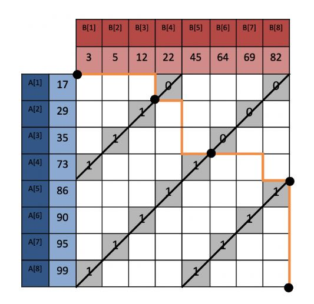
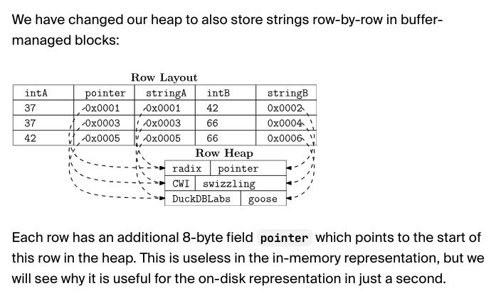
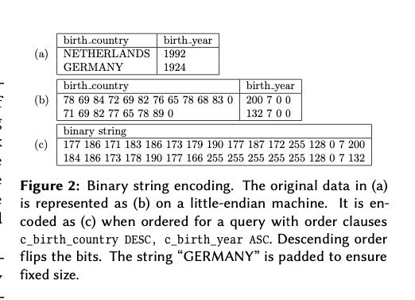
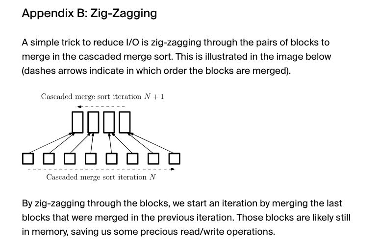

Efficient External Sorting in DuckDB
https://duckdb.org/2021/08/27/external-sorting.html
https://ceur-ws.org/Vol-3163/BICOD21_paper_9.pdf
使用cascade merge sort. 内部做了列转行来做比较
K-way merge merges K lists into one sorted list in one pass, and is traditionally used for external sorting (sorting more data than fits in memory) because it minimizes I/O. Cascade merge merges two lists of sorted data at a time until only one sorted list remains, and is used for in-memory sorting because it is more efficient than K-way merge. We aim to have an implementation that has high in-memory performance, which gracefully degrades as we go over the limit of available memory. Therefore, we choose cascade merge.
In a cascade merge sort, we merge two blocks of sorted data at a time until only one sorted block remains. Naturally, we want to use all available threads to compute the merge. If we have many more sorted blocks than threads, we can assign each thread to merge two blocks. However, as the blocks get merged, we will not have enough blocks to keep all threads busy. This is especially slow when the final two blocks are merged: One thread has to process all the data.

行在duckdb里面只在有限的几个地方在实现，支持转行也可以平滑地支持external sorting. 另外一个优势就是 排序列越多效果越好
We could stick to the columnar layout while sorting: Sort the key columns, then re-order the payload columns one by one. However, re-ordering will cause a random access pattern in memory for each column. If there are many payload columns, this will be slow. Converting the columns to rows will make re-ordering rows much easier. This conversion is of course not free: Columns need to be copied to rows, and back from rows to columns again after sorting.
Because we want to support external sorting, we have to store data in buffer-managed blocks that can be offloaded to disk. Because we have to copy the input data to these blocks anyway, converting the rows to columns is effectively free.
There are a few operators that are inherently row-based, such as joins and aggregations. DuckDB has a unified internal row layout for these operators, and we decided to use it for the sorting operator as well. This layout has only been used in memory so far. In the next section, we will explain how we got it to work on disk as well. We should note that we will only write sorting data to disk if main memory is not able to hold it.
行存储格式使用了pointer swizzling技巧，如果被刷出buffer manager的话，那么指针指向的地方存在特殊标记。

按照论文上说的将row encode成为了fixed-size，并且将字符串的头4个字节嵌入到了row format里面
We implement this comparator and opt for fixed-size encodings, which can be more easily re-ordered. For variable-size types such as strings, we can therefore only encode a prefix. We compare the whole string only when prefixes are equal. The encoding is shown in Figure 2.
Not shown in the figure are NULL values and colla- tions. NULL values are handled by prefixing each value with an additional byte denoting whether the value is NULL. Collations are handled by evaluating the collation function before encoding the prefix of the string.

文章最后还提到，如果想做cascade merge的话，最好使用zigzag的方式来做merge. 这样cache locality会好点。
